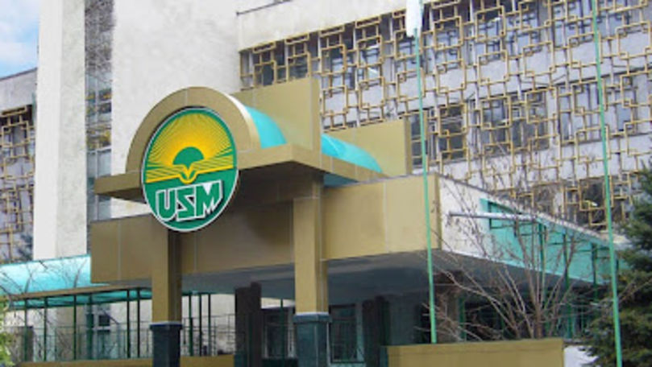

| Medicina | Drept | Tehnologii Informaționale | Ştiinţe economice |
|---|
| +373 68 343 401 rector@usm.md |
Strada Mihail Kogălniceanu 67 MD-2009 Chișinău Republica Moldova |
|  |
Dreptul privat este acea parte a unui sistem juridic de drept civil care face parte din comuna jus care implică relații între persoane fizice, cum ar fi legea contractelor și a actelor juridice, precum și legea obligațiilor.
Dreptul public este acea parte a dreptului care reglementează relațiile dintre indivizi și instituțiile statului, precum și acele relații interindividuale care sunt de interes public.Dreptul public este dominat, pe de o parte, de căutarea interesului general, care constituie finalitatea exclusivă a statului și a colectivităților publice, iar, pe de alta, dreptul public este un drept inegalitar, deoarece interesul general trebuie să primeze față de interesele particulare.
Dreptul penal reprezintă instrumentul prin care se apără cele mai importante valori sociale împotriva faptelor periculoase.În literatura de specialitate, dreptul penal este definit ca o ramură a sistemului de drept, alcătuit din totalitatea normelor juridice legiferate de puterea legislativă, care stabilesc ce fapte constituie infracțiuni, condițiile răspunderii penale, sancțiunile și alte măsuri ce urmează a fi aplicate sau luate de către instanțele de judecată persoanelor care au săvârșit infracțiuni, în scopul apărării celor mai importante valori sociale ale statului de drept.
Dreptul procedural, dreptul adjectiv, în unele jurisdicții denumite drept reparatoriu sau reguli de judecată, cuprinde regulile prin care o instanță audiază și stabilește ce se întâmplă în procedurile civile, procese, penale sau administrative.
Taxa Facultăţii de Drept - 10.500 lei